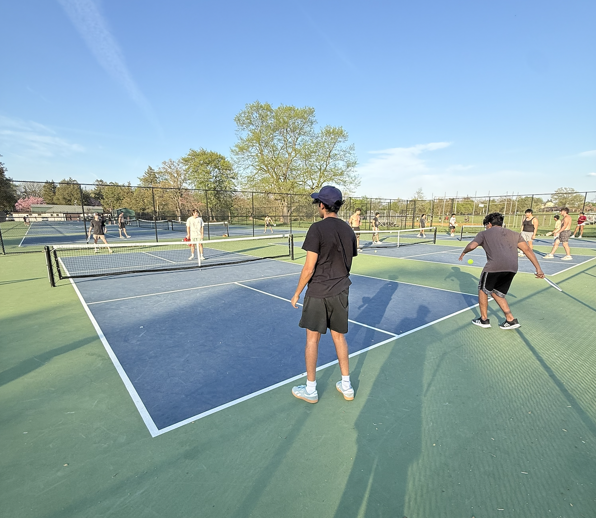
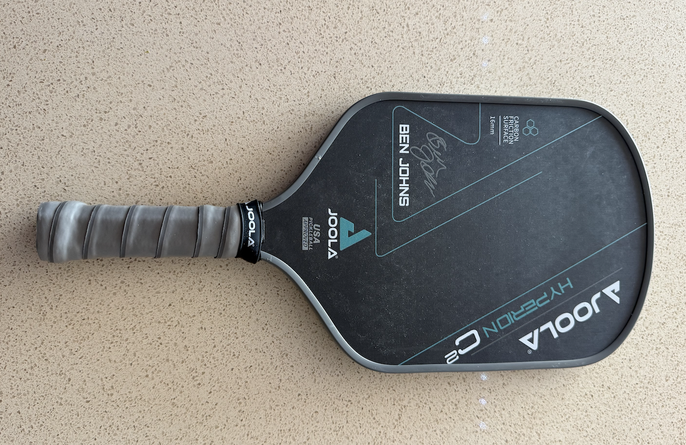

Pickleball Players
A beginner friendly guide to the gear, rules, courts, and social side of Pickleball.

Pickleball Players is a mission made to show why pickleball has become such a fun and popular activity. Here we look at the sport from a beginner and casual player perspective, while also showing how it can become competitive over time. You can find paddle reviews, grouped photo collections, an interactive court map, and player profiles. Also it is not just about rules or equipment, it also focuses on the friend group, the learning process, and the social experience of actually playing.
Let's get the ball rolling
Learn the Court

Use the interactive map to learn serving, scoring, the kitchen, net play, and beginner positioning directly on the court.
See the Game

The pictorial page shows the equipment, courts, and social side of pickleball through grouped images and short explanations.
Read the Reviews

The reviews page explains both the paddle experience and why pickleball became a regular activity with friends.